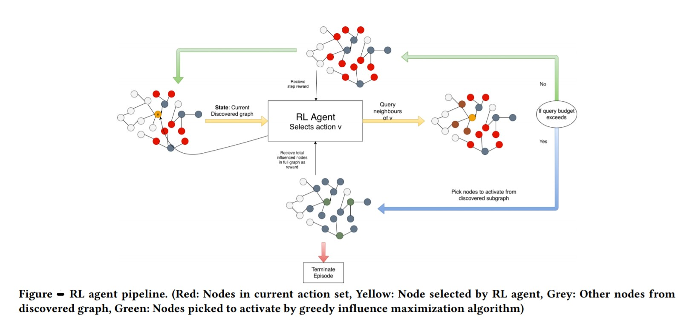
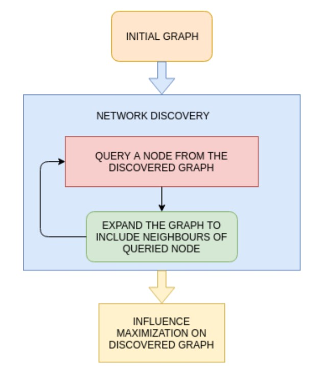
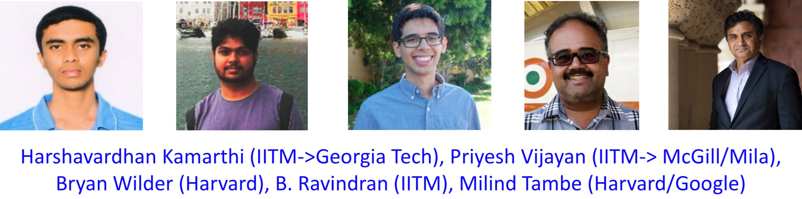

We give you the best AI and Data Science articles you want. Stay tuned to be updated about interesting research from our labs.

Humans are social animals! Most of us love being in the company of other like-minded people. While we get our families from birth, we choose our friends based on similar interests, work or history. Every day we make choices, whom to be with and whom to follow and whom to keep? These choices influence our thoughts, decisions we make and our outlook of the society.
As the social group of an individual has a large influence on their decisions, various businesses employ knowledge about social networks to maximize their reach to their prospective customers. Information on social networks is also used by government agencies to disseminate information or to catalyse change in the behavior of society or a specific group of individuals. HIV prevention methods, side effects of smoking and many such social messages can be aptly circulated utilizing these social networks. However, identification of key people which can influence the maximum number of people in a social group is a major challenge.
Balaraman Ravindran, who is a Professor at IIT Madras and heads the Robert Bosch Centre for Data Science and Artificial Intelligence, works in the area of machine learning. His team at IIT Madras along with his colleagues from McGill University and Harvard University have been working to employ machine learning methods to identify key people who can influence the social network. The team has become successful in building one such program which enables 7-23% improvement over the current methods used for finding influencers in an unknown social network. The work was among the four papers shortlisted for the best paper award at the top multi-agent systems conference (AAMAS 2020) which is one of the top conferences related to artificial intelligence.
“Social Network Analysis has given us many tools to effectively manage information dissemination in a social group, study growth and dynamics in such groups, etc. But one of the key challenges when studying social groups of underprivileged or socially marginalized groups is the recovery of the underlying social network itself. This study proposes a machine learning approach for learning to effectively allocate a limited budget to discover the network. This would allow us to reach a larger fraction of the target population and would improve the effectiveness of interventions across a broad spectrum of use cases,” says Prof. Ravindran.
Counselling generally requires face-to-face interactions with the members of a population. However, another approach to increase the reach of the message is to disseminate it through key people who know and have an influence on a large number of people in their network or can start a cascade where information can travel to many people. Graphically, a social network is like a web where people are nodes and the edges or lines between these nodes are social connections. Therefore, finding a node (or person) through which a maximum number of nodes can be influenced or message can be spread is the goal of influence maximization. The team, particularly, was motivated to do influence maximization for HIV prevention among homeless youth as routine method of talking to every youth requires a lot of effort by social workers making the exercise expensive.
The team used reinforcement learning- a machine learning method- to construct a social network and identify the key nodes. Unlike supervised machine learning, where the program learns from the given data, in reinforcement learning the programs are trained to make decisions based on their experiences. These experiences are guided by the rewards a program gets if it accomplishes a task or penalty if the program is unable to do it. Reinforcement learning is widely used in computer games, automation of robots and making business strategies.

“The core idea in this paper of leveraging a reinforcement learning approach for influence maximization is both innovative and demonstrably effective when compared with several baseline strategies on many real-world networks. An interesting element is a way in which the authors interpret and offer insights on the policy decisions learned by the framework for different datasets. Looking to the future, while the application focus in this paper is on influence maximization it would be interesting to see how such ideas can be deployed for other applications perhaps by leveraging the notion of spread sampling for community coverage and network A/B testing,” comments Prof. Srinivasan Parthasarathy, Professor at Ohio University, who works in a similar area.
The method developed by the team can be used by a researcher who intends to find influencers in a social network. To carry out such a study, the researcher should know a few people of this network and their neighbors which may help to form an initial social network graph. This social network graph is not a complete graph but rather a subset of the graph. This data can be fed into the reinforcement program developed by the team. The program will query the nodes or people of this graph and will try to identify nodes or people with maximum connections or large influence on the network. As the researcher queries an additional person about his/her neighbors, more information will be added in this graph and the program will be able to again form a new network and based on this network come up with the nodes or people who have maximum influence in the social network. These information addition steps can be repeated multiple times and every time a new and better social network closer to the actual social network will be obtained and the influencers will be identified.
Apart from HIV prevention in homeless youth, the researchers utilized this reinforcement program to find influencers on wildlife contact networks, to understand retweet networks on twitter, using data of diffusion of microfinance in rural settings. The results showed that the program developed by them is able to provide a 7-23% improvement over the current state-of-the-art method being used for influence maximization.
The team aims to deploy this new method for various real world applications. They are planning to work with NGOs who are working with such social groups and deploy this learning approach to improve their reach and analyze the policy learnt by the algorithm for improving coverage and identify the socially relevant features that indicate peer leaders. This they believe could lead to deeper insights on the social dynamics of specific groups.
“We want to extend this work to learning on larger classes of networks effectively. Currently, we accomplish this through ad-hoc scaling and that is not a very robust technique,” adds Prof. B. Ravindran.
The research team of Prof. B. Ravindran included Harshavardhan Kamarthi and Priyesh Vijayan from IIT Madras;; Bryan Wilder and Milind Tambe from Harvard University.

Link to the article: https://arxiv.org/abs/1907.11625